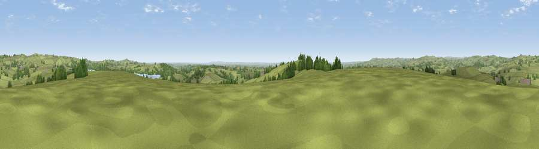

Viewpoint near Hognaston
#14921 in England · top 11% of its area beats it · near HognastonThe view, rendered

A 360° render of this exact spot computed from the terrain model, tree cover and land cover — summer colours, afternoon light, calibrated against photographs of famous viewpoints. Real trees, hedges and buildings will differ in detail.
The panorama
Grey silhouette: terrain skyline in each direction (720 bearings, Earth curvature and refraction included). Dashed green: skyline with trees (+15 m) and buildings (+8 m) as obstacles. Blue strip: how far the ground is visible on each bearing.
Where the view opens
Wedge length = distance to the farthest visible ground on that bearing (vegetation-aware). Rings at 10, 25 and 50 km.
What fills the view
82% grassland · 13% woodland · 3% cropland · 1% built-up
Angular shares of the visible panorama (visual magnitude), not map area. Landscape diversity 0.27 (0–1 Shannon).
Key numbers
More beautiful places nearby
The staircase of upgrades: each row has a higher view potential than everything closer. Driving times are estimates from straight-line distance, calibrated against real road routing — check an actual route before setting out.
| Place | Direction | Drive | Score |
|---|---|---|---|
| Viewpoint near Kniveton | SSW · 1 km | ~4 min | 65.2 |
| Harboro Rocks | NNE · 5 km | ~11 min | 66.7 |
| Tissington Hill | WNW · 7 km | ~15 min | 75.5 |
| Viewpoint near Mow Cop | W · 37 km | ~56 min | 78.9 |
| Viewpoint near Mow Cop | W · 37 km | ~56 min | 80.2 |
| Viewpoint near Harthill | W · 71 km | ~95 min | 80.5 |
| Viewpoint near Little Wenlock | SW · 72 km | ~96 min | 84.2 |
| The Wrekin | SW · 73 km | ~97 min | 85.0 |
53.05422, -1.66838 · source: screening · position refined by local search. Computed location — check access rights before visiting.